後台-商品屬性，多對多非外鍵表操作
SpringBoot微服務項目筆記-05
後台-商品屬性
先認識名詞
- SPU（Standard Product Unit）
- 「標準產品單位」，是商品資訊聚合的最小單位，是一組可複用、易檢索的標準化資訊的集合，該集合描述了一個產品的特性，例如: 「iPhone 13」
- SKU（Stock Keeping Unit）
- 「最小庫存單位」，對應具體規格的商品，即貨號（或料號），例如: 「iPhone 13(256G)」、「潮男衝鋒衣-M-Blue」
- 既然是商城項目，現在需要呈現幾種關聯:
- 選中一個品牌，他有哪些品項的產品，例如: 蘋果:手機、平板…
- 選中一個品項(分類)，裡面有他的規格等參數，例如: 手機{CPU:高通880, 尺寸:6吋…}
- 選中一個SPU，他有那些共通屬性，例如: iPhone 13的廠商都是蘋果、作業系統都是IOS…
- 選中一個SKU，有哪些獨特屬性，例如: 顏色、有多少庫存…
- 以上有些是多對多的關係，還挺複雜的，一一拆解來實現
- 標題大綱是學習的知識點
資料庫表的名詞對應
我直到跟著做完整個商品管理，才弄清他資料庫設計背後的商業邏輯，因為沒有外鍵又要多對多關聯，整個挺複雜的，這塊是難點
- brand = 品牌，一個品牌之下可能存在多個category
- 蘋果 有 手機、平板
- 在品牌中操作關聯 = 操作pms_category_brand_relation
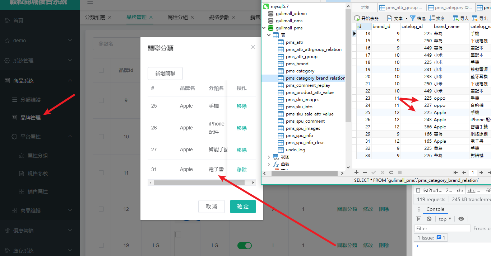
- category = 分類，品項
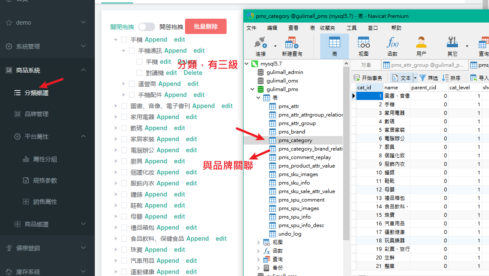
- attr_group = 屬性分組
- 隸屬於某個category之下
- 例如: 手機的基本信息集合(裡面有長寬、大小、材質等等)
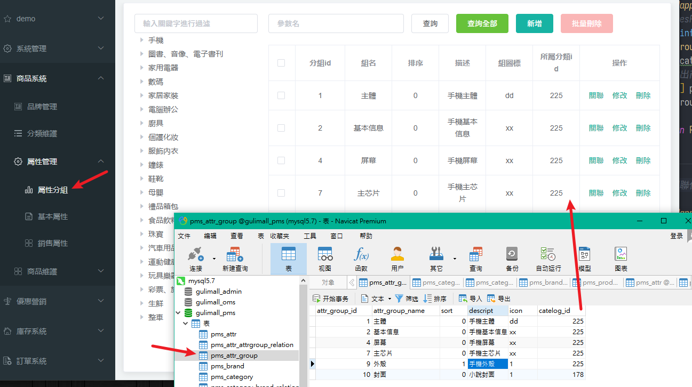
- attr = 屬性
- 隸屬於某個category之下，例如: 手機的外殼有白色、黑色
- 其中attr_type = 1 表示基本屬性(規格參數)，例如: 三星S21的充電口是typeC(每個型號都一樣)
- 其中attr_type = 0 表示銷售屬性，例如哀鳳13的顏色(有多種對應的貨號)

- 屬性不一定有分組，因為他建立的時候不一定要填
- 建立關聯就是操作pms_attr_attrgroup_relation這張表
- 可以在規格參數頁面中對某條參數修改，指定他屬於某分組
- 也可以在分組頁面中將同品項未納入分組的屬性關聯到旗下
父子節點訊息傳遞
- 首先從品項出發，要呈現的效果是這樣
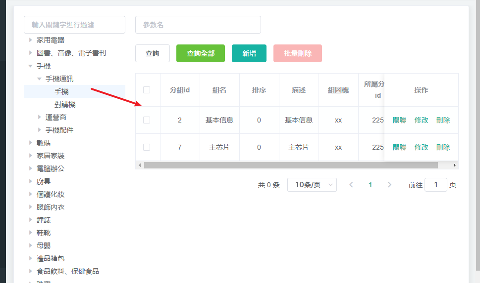
-
左邊的品項三級分類直接拿先前做好的來用
-
attrgroup是父節點，引用了
"../common/category"用來顯示三級分類../表示上一層./表示同層
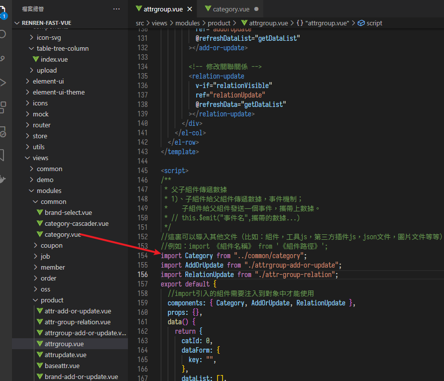
- 資料呈現是沒問題，然而這邊還需要互動，所以是跨節點事件
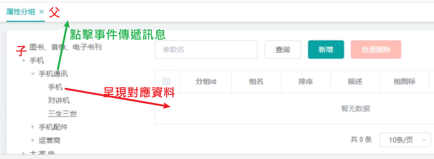
- 在category子節點綁定點擊事件，並且用
this.$emit傳遞出去
this.$emit("自訂事件名",傳遞的資料...)
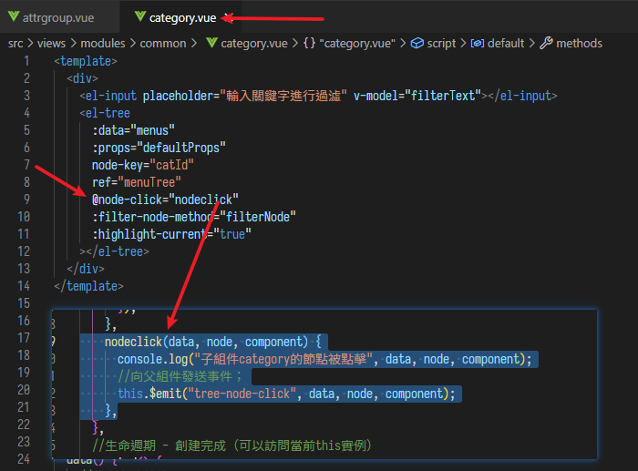
- 回到attrgroup父節點，由於一開始就import了，可以直接調用剛剛自訂的事件名
tree-node-click - 並且綁定一個重新查詢的動作(從子節點傳來的data拿到Id，並調用get方法得到資訊)
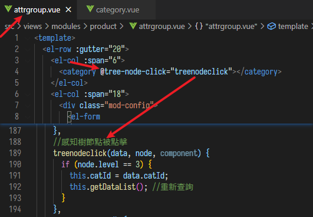
- 初步完成功能，接著完善新增修改，目標預覽:

Bean轉JSON空判斷
-
查詢子分類children，到了第三級他的children是
[]，導致出現空白的下級分類 -
使用
@JsonInclude，讓返回結果時如果是空時，不傳一個空的[]過去- NON_EMPTY就包含NON_NULL
@TableField(exist = false)
@JsonInclude(JsonInclude.Include.NON_EMPTY)
private List<CategoryEntity> children;
回顯資料
- 當在頁面上點新增或修改時會觸發事件，調用它的子模組xxx-add-or-update，點開來看裡面會有一個init方法，從這邊發起請求給後端
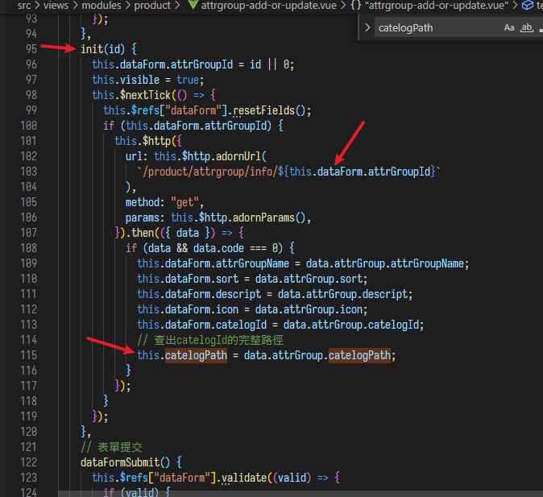
- 在AttrGroup中增加一個表示路徑的屬性
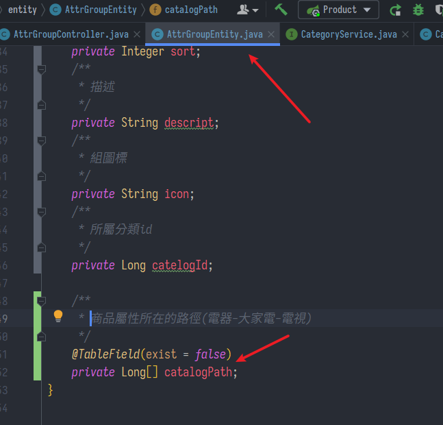
- AttrGroupController
@RequestMapping("/info/{attrGroupId}")
public R info(@PathVariable("attrGroupId") Long attrGroupId) {
AttrGroupEntity attrGroup = attrGroupService.getById(attrGroupId);
Long catelogId = attrGroup.getCatelogId();
// 找出商品屬性所在的路徑(電器-大家電-電視)
Long[] path = categoryService.findCatalogPath(catelogId);
attrGroup.setCatalogPath(path);
return R.ok().put("attrGroup", attrGroup);
}
-
注意是在AttrGroup中調用categoryService
-
categoryServiceImpl
/**
* 找出商品屬性所在的路徑(電器-大家電-電視)
*
* @param catelogId
* @return
*/
@Override
public Long[] findCatalogPath(Long catelogId) {
List<Long> paths = new ArrayList<>();
List<Long> parentPath = findParentPath(catelogId, paths);
// 找的是從子出發，所以還要逆轉
Collections.reverse(parentPath);
return parentPath.toArray(new Long[parentPath.size()]);
}
/**
* 找出所有父path
*
* @param catelogId
* @param paths
* @return
*/
private List<Long> findParentPath(Long catelogId, List<Long> paths) {
// 先放進當前的
paths.add(catelogId);
CategoryEntity byId = this.getById(catelogId);
if (byId.getParentCid() != 0) {
// 遞歸搜
findParentPath(byId.getParentCid(), paths);
}
return paths;
}
模糊查詢
- 品牌管理直接導入頁面，完成一個簡單的查詢篩選功能
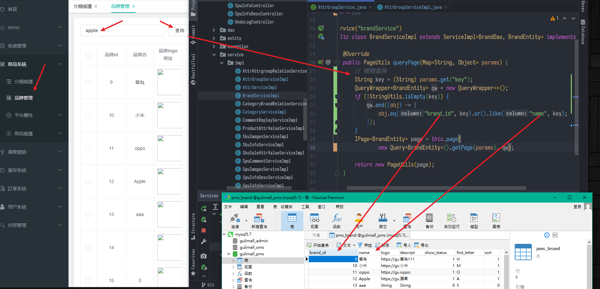
public PageUtils queryPage(Map<String, Object> params) {
// 模糊查詢
String key = (String) params.get("key");
QueryWrapper<BrandEntity> qw = new QueryWrapper<>();
if (!StringUtils.isEmpty(key)) {
qw.and((obj) -> {
obj.eq("brand_id", key).or().like("name", key);
});
}
IPage<BrandEntity> page = this.page(
new Query<BrandEntity>().getPage(params), qw);
return new PageUtils(page);
}
分頁插件
@Configuration
@EnableTransactionManagement
@MapperScan(basePackages = "yozi.mall.**.dao")
public class MyBatisPlusConfig {
/**
* 插件集合
*/
@Bean
public MybatisPlusInterceptor mybatisPlusInterceptor() {
// 插件
MybatisPlusInterceptor interceptor = new MybatisPlusInterceptor();
// 分頁插件
PaginationInnerInterceptor paginationInnerInterceptor = new PaginationInnerInterceptor(DbType.MYSQL);
// 添加分頁插件
interceptor.addInnerInterceptor(paginationInnerInterceptor);
return interceptor;
}
}
關聯分類
- 品牌與品項是多對多的關係，例如品牌蘋果對應品項手機、平板；品項手機對應許多廠牌
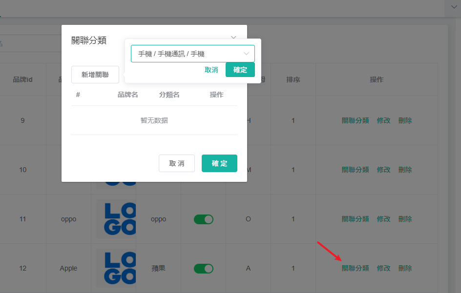
- 多對多，所以資料庫有中間表
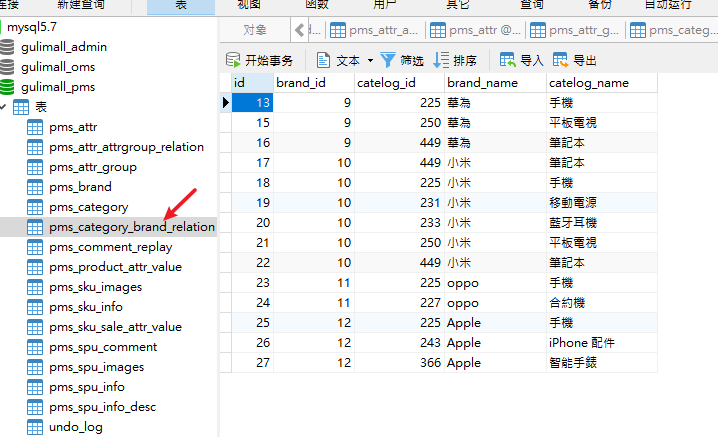
- CategoryBrandRelationController.java
/**
* 從品牌獲取關聯品項列表
*/
@GetMapping("/catelog/list")
public R catelogList(@RequestParam("brandId") Long brandId) {
List<CategoryBrandRelationEntity> data =
categoryBrandRelationService.list(new QueryWrapper<CategoryBrandRelationEntity>().eq("brand_id",
brandId));
return R.ok().put("data", data);
}
- 因為新增的api前端只傳來品牌id跟品項id，後端還得自己去找品牌名、品項名
- 為何不在資料庫外鍵連表?
- 比如淘寶這種大電商，假如品牌10萬個，品項100萬個，用外鍵笛卡爾積會高的嚇人拖垮資源，for循環查表N次相較之下微不足道，只能說兩害相權取其輕
- 一般來說實務上都是禁止使用外鍵的(那之前還學個毛left join 哭阿)
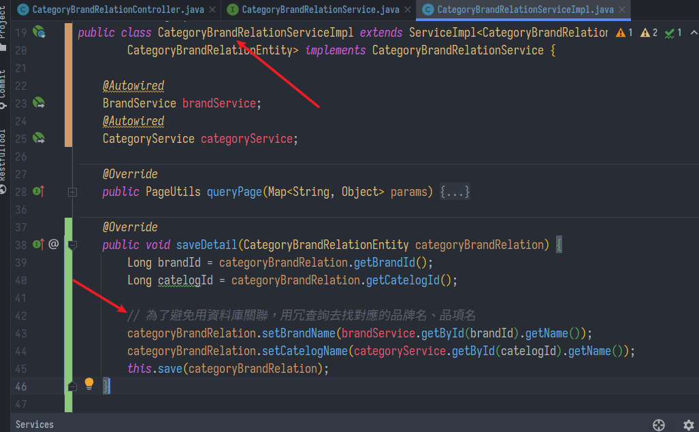
- 完成
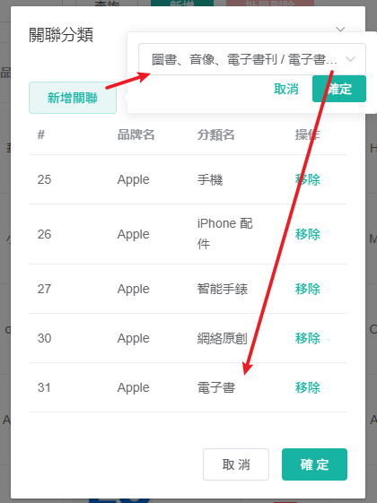
更新冗餘屬性
- 前面用多餘的查詢方式去獲取品牌名、品項名，雖然省下了外鍵的消耗，但是有隱患，就是更新品牌名稱或品項名，就要連中間表裡面的品牌名、品項名一起更新
先處理品牌名
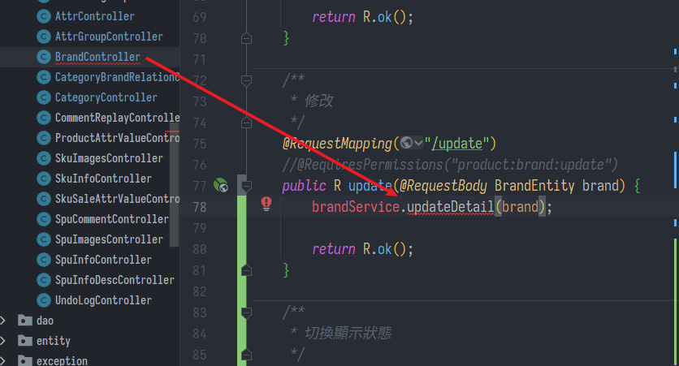
- BrandServiceImpl
/**
* 冗餘的品牌名、品項名更新
*
* @param brand
*/
@Override
public void updateDetail(BrandEntity brand) {
// 先更新自己
this.updateById(brand);
// 如果有更動品牌名
if (!StringUtils.isEmpty(brand.getName())) {
// 更新資料庫表中所有舊的品牌名
categoryBrandRelationService.updateBrand(brand.getBrandId(), brand.getName());
}
// TODO 更新其他關聯
}
- 注意是從Brand調用CategoryBrandRelationService
- CategoryBrandRelationServiceImpl
public void updateBrand(Long brandId, String name) {
CategoryBrandRelationEntity categoryBrandRelationEntity = new CategoryBrandRelationEntity();
categoryBrandRelationEntity.setBrandId(brandId);
categoryBrandRelationEntity.setBrandName(name);
// 更新資料庫表中所有舊的品牌名
this.update(categoryBrandRelationEntity, new UpdateWrapper<CategoryBrandRelationEntity>()
.eq("brand_id", brandId));
}
xml編寫SQL語句
承上，品項名稱也要改
- CategoryController也要改
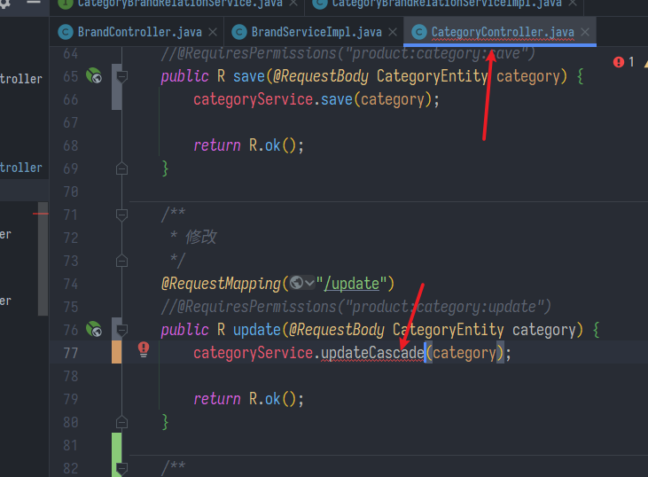
- CategoryServiceImpl
- 這裡換個花樣，不是用UpdateWrapper，換自己造一個執行sql語句的方法
@Override
public void updateCascade(CategoryEntity category) {
this.updateById(category);
categoryBrandRelationService.updateCategory(category.getCatId(),category.getName() );
}
- IDEA安裝MybatisX插件，在DAO可以看到這個鳥兒
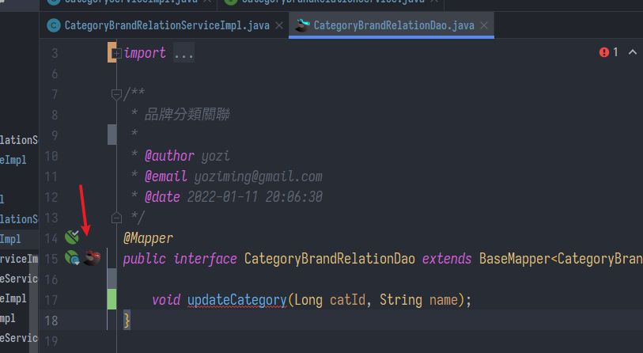
- alt + enter 點一下跳到xml，已經自動生成好待綁定的方法，自己填入SQL語句
<update id="updateCategory">
UPDATE pms_category_brand_relation
SET catelog_name= #{name}
WHERE catelog_id = #{catId}
</update>
- 回到DAO用
@Param("變數名")綁定xml中的#{變數名}
@Mapper
public interface CategoryBrandRelationDao extends BaseMapper<CategoryBrandRelationEntity> {
void updateCategory(@Param("catId") Long catId, @Param("name") String name);
}
註解事務
- 最後為了確保更新成功，還要加上事務註解，必須先到MyBatisPlusConfig開啟功能
@EnableTransactionManagement
// MyBatisPlusConfig
@Configuration
@EnableTransactionManagement
@MapperScan(basePackages = "yozi.mall.**.dao")
public class MyBatisPlusConfig {
// CategoryServiceImpl
@Transactional
@Override
public void updateCascade(CategoryEntity category) {
// BrandServiceImpl
@Transactional
@Override
public void updateDetail(BrandEntity brand) {
Vo類
- 現在來到規格參數，資料庫中
pms_attr這張表，保存的是這些資料
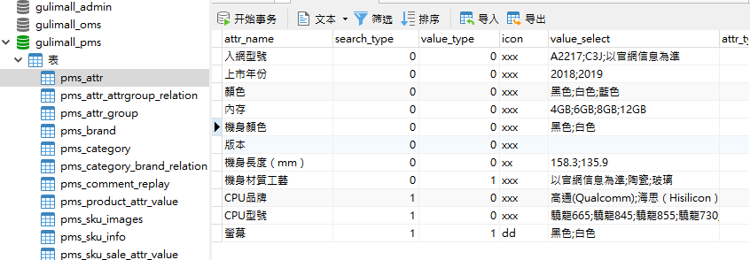
- 因為都是多對多關聯，所以Entity中根據資料庫表生成的屬性肯定是不夠用的，還要有能夠表示外鍵關聯的額外屬性
- 用舊方法可以在AttrEntity新增一個屬性然後聲明
@TableField(exist = false)，但這麼做久了會很亂 - 於是就要使用VO，VO簡單來說就是專門應付前端的需求，用來接收ajax傳遞的data或返回查詢結果用
新增
- 前端的API是這樣
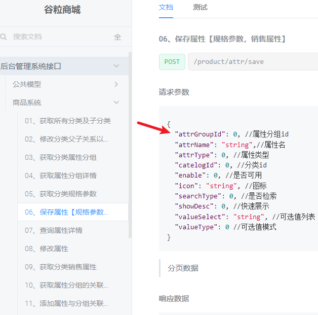
-
顯然本來的AttrEntity是沒有attrGroupId這個欄位的，所以必須造一個AttrVo，他跟AttrEntity一樣，但多了
private Long attrGroupId; -
修改保存方法
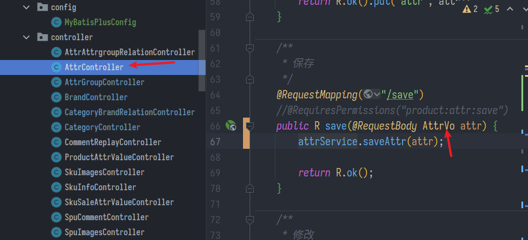
- AttrServiceImpl
- 注意這邊是分兩步驟，本來的attrEntity一樣存給他本來的表
- 下面額外保存關聯關係，調用的是AttrAttrgroupRelationDao的insert
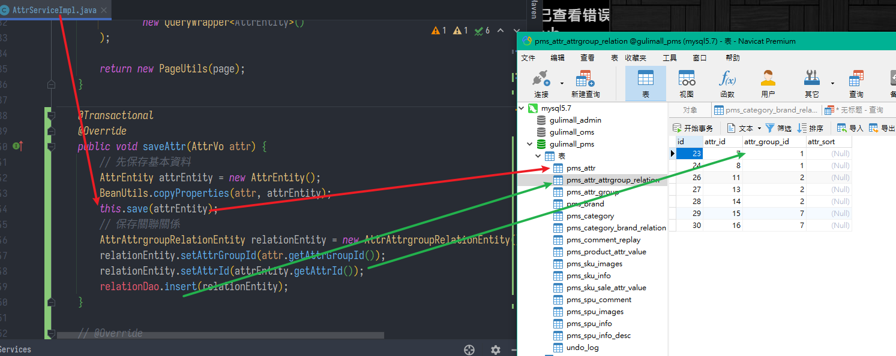
@Transactional
@Override
public void saveAttr(AttrVo attr) {
// 先保存基本資料
AttrEntity attrEntity = new AttrEntity();
BeanUtils.copyProperties(attr, attrEntity);
this.save(attrEntity);
// 保存關聯關係
AttrAttrgroupRelationEntity relationEntity = new AttrAttrgroupRelationEntity();
relationEntity.setAttrGroupId(attr.getAttrGroupId());
relationEntity.setAttrId(attrEntity.getAttrId());
relationDao.insert(relationEntity);
}
查詢
難點，重點知識流式處理、無外鍵多關聯表的查詢返回
- 前端的API
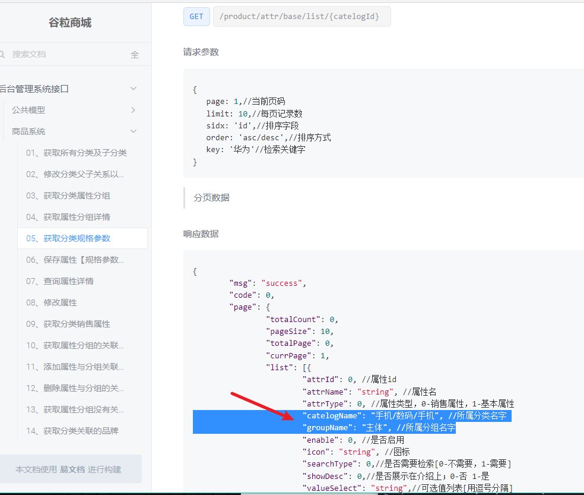
- 為了給前端返回結果，再造一個AttrRespVo
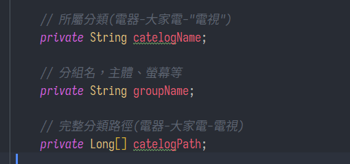
- AttrController
/**
* 規格參數列表
*/
@GetMapping("/base/list/{catelogId}")
//@RequiresPermissions("product:attr:list")
public R baseAttrList(@RequestParam Map<String, Object> params,
@PathVariable("catelogId") Long catelogId) {
PageUtils page = attrService.queryBasePageCatelogId(params, catelogId);
return R.ok().put("page", page);
}
- AttrServiceImpl
- 這個就複雜了，要先查出自己本來的，然後拿CatelogId去關聯表、catelogName、groupName
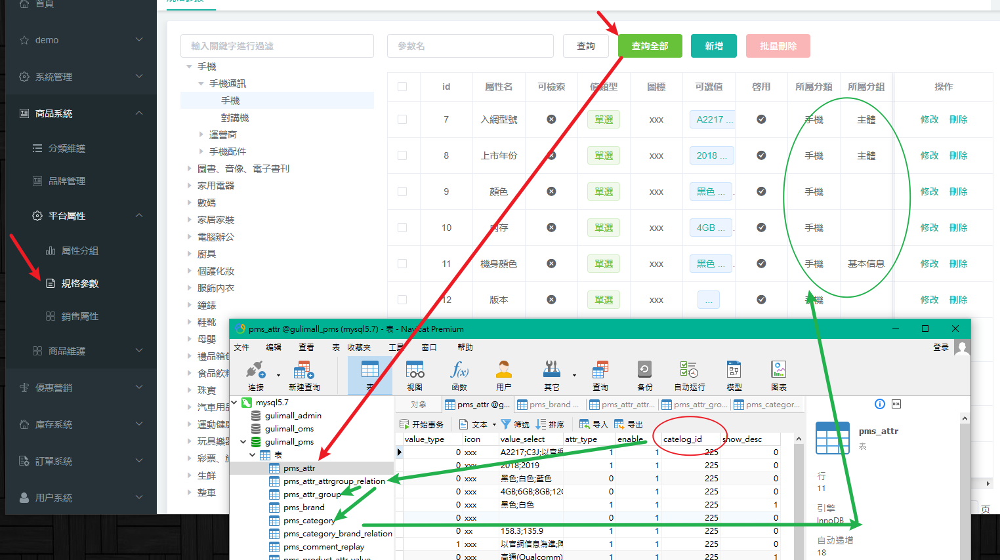
@Override
public PageUtils queryBasePageCatelogId(Map<String, Object> params, Long catelogId) {
QueryWrapper<AttrEntity> qw = new QueryWrapper<>();
// 指定三級分類
if (catelogId != 0) {
qw.eq("catelog_id", catelogId);
}
// 有查詢條件
String key = (String) params.get("key");
if (!StringUtils.isEmpty(key)) {
qw.and((obj) -> {
obj.eq("attr_id", key).or().like("attr_name", key);
});
}
IPage<AttrEntity> page = this.page(
new Query<AttrEntity>().getPage(params), qw);
// 到這邊查完Attr基本訊息，把頁數總數那些啥的用PageUtils封裝起來
PageUtils pageUtils = new PageUtils(page);
// 但是內容物還沒完，將查到的紀錄一筆筆拿出來，找他們的catelogName與groupName
List<AttrEntity> records = page.getRecords();
// 流式，把一筆筆資料當水流，過完管道就處理完了
List<AttrRespVo> respVos = records.stream().map(attrEntity -> {
// 抓出裡面的attrEntity，拷貝到AttrRespVo上
AttrRespVo attrRespVo = new AttrRespVo();
BeanUtils.copyProperties(attrEntity, attrRespVo);
// 去關聯表拿relationEntity，用來找到AttrGroupId，注意是selectOne
AttrAttrgroupRelationEntity relationEntity =
relationDao.selectOne(new QueryWrapper<AttrAttrgroupRelationEntity>().eq("attr_id",
attrEntity.getAttrId()));
// 拿到groupName分組名: 主體、螢幕等
if (relationEntity != null) {
AttrGroupEntity attrGroupEntity = attrGroupDao.selectById(relationEntity.getAttrGroupId());
attrRespVo.setGroupName(attrGroupEntity.getAttrGroupName());
}
// 拿到catelogName分類名(電器-大家電-"電視")
CategoryEntity categoryEntity = categoryDao.selectById(attrEntity.getCatelogId());
if (categoryEntity != null) {
attrRespVo.setCatelogName(categoryEntity.getName());
}
return attrRespVo;
}).collect(Collectors.toList()); // 接起處理完的流，裝到List<AttrRespVo> respVos
// 把多賦好2個屬性的list塞回去
pageUtils.setList(respVos);
return pageUtils;
}
紀錄一個debug半天的坑
- 因為這個功能外連到其他表，只想到relationEntity有判斷非空不會往下做，但是我沒想到relationEntity是有了，結果表裏面有空的欄
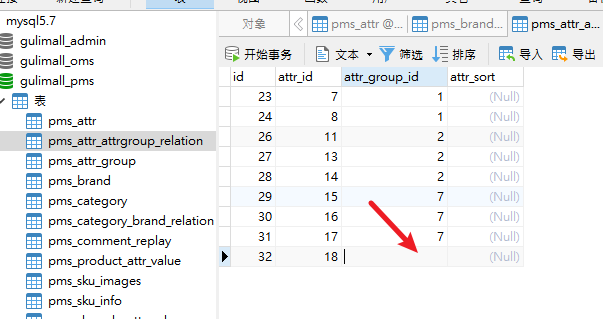
- debug功力還太差了，我實在不怎會用小紅點，每次一直按都跑到很深的地方回不來
- 總之有外連的表，開發時可能暫時測功能填了不符合規定的值，用完記得刪掉，切記切記!!
修改
- 修改要先完成回顯，API:
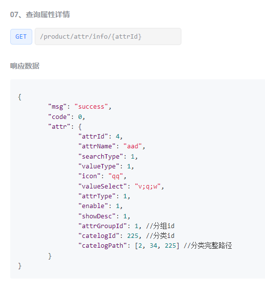
- AttrController.java
@RequestMapping("/info/{attrId}")
//@RequiresPermissions("product:attr:info")
public R info(@PathVariable("attrId") Long attrId) {
// AttrEntity attr = attrService.getById(attrId);
AttrRespVo respVo = attrService.getInfoById(attrId);
return R.ok().put("attr", respVo);
}
- AttrServiceImpl.java
/**
* 屬性詳情(給修改回顯用)
*
* @param attrId
* @return
*/
@Override
public AttrRespVo getInfoById(Long attrId) {
AttrEntity attrEntity = this.getById(attrId);
AttrRespVo attrRespVo = new AttrRespVo();
BeanUtils.copyProperties(attrEntity, attrRespVo);
// 去關聯表拿relationEntity，用來找到AttrGroupId，注意是selectOne
AttrAttrgroupRelationEntity relationEntity =
relationDao.selectOne(new QueryWrapper<AttrAttrgroupRelationEntity>().eq("attr_id",
attrEntity.getAttrId()));
// 拿到groupName分組名: 主體、螢幕等
if (relationEntity != null) {
attrRespVo.setAttrGroupId(relationEntity.getAttrGroupId());
AttrGroupEntity attrGroupEntity = attrGroupDao.selectById(relationEntity.getAttrGroupId());
if (attrGroupEntity != null) {
attrRespVo.setGroupName(attrGroupEntity.getAttrGroupName());
}
}
// 完整分類路徑，之前寫過的
Long catelogId = attrEntity.getCatelogId();
Long[] catalogPath = categoryService.findCatalogPath(catelogId);
attrRespVo.setCatelogPath(catalogPath);
// 自己的三級分類名
CategoryEntity categoryEntity = categoryDao.selectById(catelogId);
if (categoryEntity != null) {
attrRespVo.setCatelogName(categoryEntity.getName());
}
return attrRespVo;
}
- 接著修改，讓保存的也跟前面一樣拆成兩步
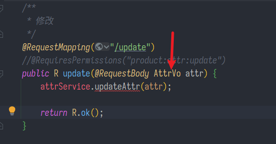
- AttrServiceImpl.java
@Transactional
@Override
public void updateAttr(AttrVo attr) {
// 先更新基本資料
AttrEntity attrEntity = new AttrEntity();
BeanUtils.copyProperties(attr, attrEntity);
this.updateById(attrEntity);
// 保存關聯關係
AttrAttrgroupRelationEntity relationEntity = new AttrAttrgroupRelationEntity();
relationEntity.setAttrGroupId(attr.getAttrGroupId());
relationEntity.setAttrId(attr.getAttrId());
// 先判斷本來有無值
Long count = relationDao.selectCount(new QueryWrapper<AttrAttrgroupRelationEntity>().eq(
"attr_id",
attr.getAttrId()));
if (count > 0) {
// 更新
relationDao.update(relationEntity, new UpdateWrapper<AttrAttrgroupRelationEntity>().eq("attr_id",
attr.getAttrId()));
} else {
// 新增
relationDao.insert(relationEntity);
}
}
上次修改於 2022-01-22